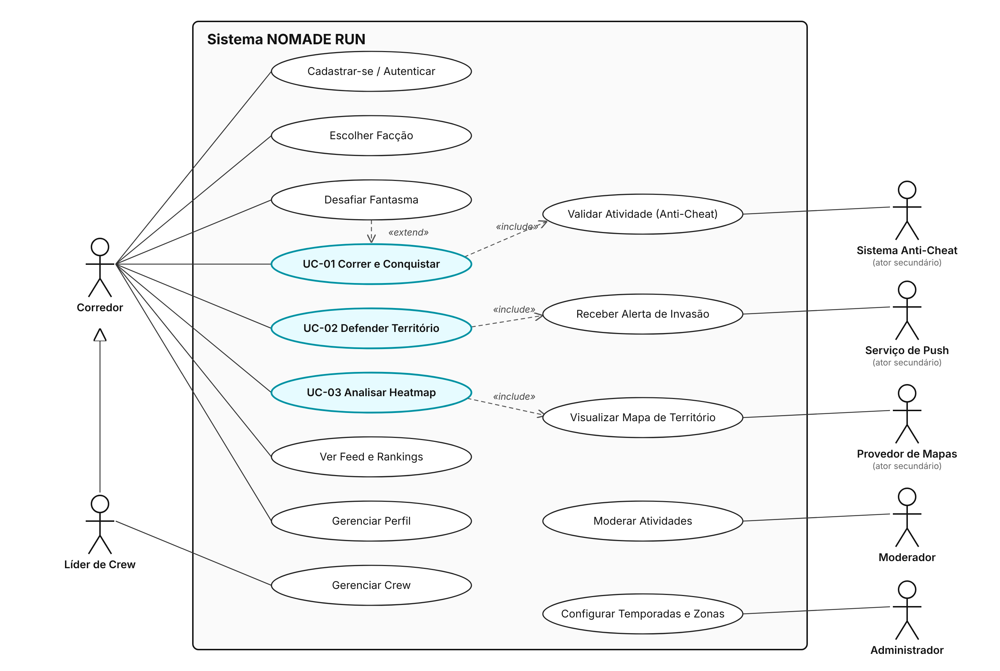
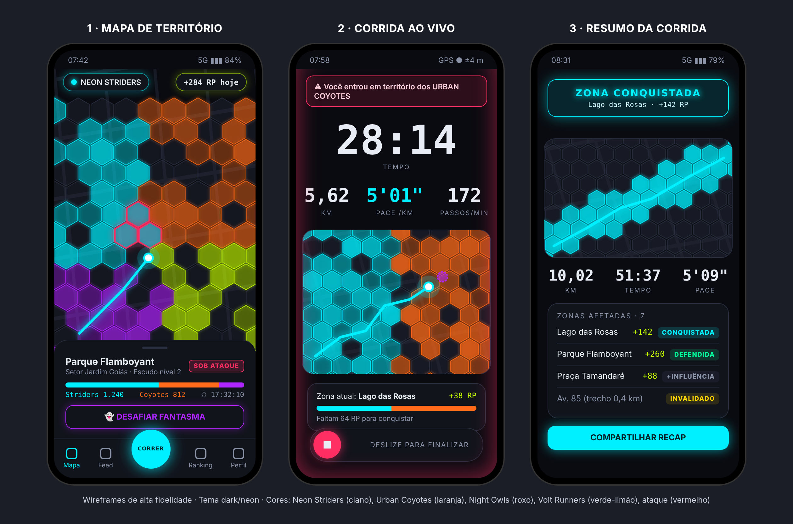

Versão: 1.0 | Data: 10/10/2026
Autores:
Este documento especifica, de forma detalhada e verificável, os requisitos funcionais, não funcionais, regras de negócio, casos de uso e interfaces do sistema NOMADE RUN. Ele foi elaborado a partir da Documentação de Concepção do Projeto e tem três objetivos:
Público-alvo: equipe de desenvolvimento, equipe de testes, professor orientador e avaliadores.
O NOMADE RUN é um aplicativo móvel (Android e iOS) com painel web de apoio, que combina o registro de corridas por GPS (no estilo de aplicativos como o Strava) com um jogo de conquista de território no mapa real da cidade. O mapa é dividido em hexágonos; ao correr dentro deles, o usuário acumula pontos para si e para a sua facção, conquistando, defendendo e fortificando territórios.
O sistema FAZ:
O sistema NÃO FAZ:
| Termo | Definição |
|---|---|
| GPS | Global Positioning System — sistema de navegação por satélite usado para obter a posição do aparelho. |
| Pace | Ritmo de corrida, expresso em minutos por quilômetro (ex.: 5:30 min/km). Quanto menor, mais rápido. |
| Split | Tempo gasto em cada quilômetro completo de uma atividade. |
| Atividade | Registro de uma corrida, do início ao fim, com todos os pontos de GPS e sensores. |
| H3 | Sistema de indexação geoespacial hexagonal hierárquico (desenvolvido pela Uber) usado para dividir o mapa. |
| Hexágono / Zona | Célula H3 de resolução 9 (≈ 0,1 km², lado ≈ 200 m). Unidade mínima de território que pode ser conquistada. |
| Distrito | Célula H3 de resolução 7 (≈ 5 km²), que agrupa zonas. Base do título de “Prefeito”. |
| Cidade | Município ao qual uma zona pertence (definido pelo limite oficial do IBGE no Brasil ou do OpenStreetMap no exterior). Unidade dos rankings e da competição Cidade × Cidade. |
| Cidade natal | Cidade escolhida pelo usuário para representar no placar Cidade × Cidade (troca permitida 1 vez por temporada). |
| Zona bloqueada | Zona sobre rodovia, água, aeroporto ou área de risco, que não gera pontos. |
| RP (Run Points) | Pontos gerados por metro corrido válido dentro de uma zona (ver RN-001). |
| Influência | Soma de RP acumulada por uma facção em uma zona, sujeita a decaimento diário. |
| Facção | Um dos quatro times globais: Neon Striders, Urban Coyotes, Night Owls e Volt Runners. |
| Crew | Grupo local de até 30 corredores de uma mesma facção. |
| Dono da zona | Facção com a maior influência em uma zona, desde que ≥ 100. |
| Sob ataque | Estado de uma zona quando uma facção inimiga atinge ≥ 50% da influência do dono. |
| Escudo / Fortificação | Nível 0–3 que reduz os RP inimigos recebidos por uma zona (RN-004). |
| Modo Fantasma (Ghost Run) | Desafio em que o usuário corre contra a gravação do melhor tempo do dono da zona. |
| Heatmap | Mapa de calor que mostra a intensidade de corridas/disputas em uma área num período. |
| Anti-Cheat | Conjunto de validações que detectam fraude na atividade. |
| Anti-Spoofing | Parte do anti-cheat que detecta localização falsificada (GPS spoofing / mock location). |
| Mock location | Recurso do sistema operacional (ou app de terceiros) que injeta coordenadas falsas. |
| Trust Score | Índice de confiança do usuário (0–100) reduzido a cada indício de fraude. |
| Temporada | Ciclo mensal de competição, com reset parcial do mapa e premiações. |
| Push | Notificação enviada ao aparelho mesmo com o app fechado. |
| HMAC | Hash-based Message Authentication Code — assinatura que garante a integridade dos dados enviados. |
| JWT | JSON Web Token — token de autenticação assinado. |
| RLS | Row Level Security — controle de acesso por linha no banco PostgreSQL. |
| API | Application Programming Interface. |
| SDK | Software Development Kit. |
| LGPD | Lei Geral de Proteção de Dados (Lei nº 13.709/2018). |
| WCAG | Web Content Accessibility Guidelines — diretrizes de acessibilidade. |
| p95 / p99 | Percentil 95 / 99 do tempo de resposta: 95% / 99% das requisições respondem abaixo desse valor. |
| VU | Virtual User — usuário simulado em teste de carga (k6). |
| E2E | End-to-End — teste de ponta a ponta simulando o usuário real. |
| skills.sh | Diretório aberto de Agent Skills (pacotes de instruções procedurais para agentes de IA) mantido pela Vercel. |
O NOMADE RUN é um produto novo e independente, composto por três partes:
O produto se posiciona entre os aplicativos de registro de corrida (Strava, Nike Run Club) e os jogos baseados em localização (Pokémon GO, Ingress), trazendo o registro esportivo dos primeiros e a mecânica de disputa territorial dos segundos.
| Perfil | Descrição | Conhecimento técnico | Uso principal |
|---|---|---|---|
| Corredor casual | 16+ anos, corre 1–3 vezes por semana, motivado por diversão e metas. | Básico (usa apps comuns de celular). | Registrar corridas, conquistar zonas próximas de casa. |
| Corredor competitivo | Treina com frequência, acompanha pace e recordes. | Intermediário. | Dominar distritos, ranking, Modo Fantasma. |
| Líder de Crew | Organiza grupos de corrida (assessorias, amigos). | Intermediário. | Gerenciar Crew, metas, corridas em grupo. |
| Moderador | Membro da equipe do NOMADE RUN. | Avançado. | Revisar atividades suspeitas no painel web. |
| Administrador | Equipe técnica. | Avançado. | Configurar temporadas, zonas bloqueadas, parâmetros do jogo. |
| ID | Nome | Descrição Detalhada | Prioridade |
|---|---|---|---|
| RF-001 | Cadastro e Autenticação | O sistema deve permitir cadastro e login por e-mail/senha e por Google/Apple, emitindo token JWT com validade de 1 h e refresh token. Deve permitir recuperação de senha por e-mail e exigir confirmação de idade ≥ 16 anos e aceite dos termos e da política de privacidade. | Alta |
| RF-002 | Gestão de Perfil | O usuário deve poder editar nome de usuário (único, 3–20 caracteres), avatar, cidade, unidades (km/mi), raio de privacidade (100–1000 m) e preferências de voz e notificação; deve poder exportar seus dados (JSON) e excluir a conta. | Média |
| RF-003 | Escolha de Facção | No primeiro acesso, o usuário deve escolher uma das 4 facções. A troca é permitida 1 vez por temporada e zera a contribuição pessoal do usuário na temporada corrente. | Alta |
| RF-004 | Rastreamento de Corrida | O sistema deve gravar a atividade por GPS a cada 1 s (com precisão, velocidade e altitude) e ler pedômetro e acelerômetro, inclusive com tela bloqueada e app em segundo plano. Deve exibir ao vivo: tempo, distância, pace atual, pace médio e zona atual; deve permitir pausar, retomar e finalizar (finalizar por gesto “deslizar” para evitar toque acidental) e pausar automaticamente quando a velocidade ficar < 1 km/h por 10 s. | Alta |
| RF-005 | Gravação Offline e Sincronização | Sem internet, o app deve armazenar os pontos em banco local (SQLite) e sincronizá-los automaticamente em lotes de até 50 pontos quando a conexão voltar, com retentativa exponencial e sem duplicidade (idempotência por atividade + sequência). | Alta |
| RF-006 | Resumo e Histórico de Atividades | Ao finalizar, o sistema deve exibir mapa do trajeto, distância, tempo em movimento, pace médio, splits por km, gráfico de pace, recordes pessoais, lista de zonas afetadas (RP ganhos, zonas conquistadas/defendidas), badges e eventuais trechos invalidados pelo anti-cheat com explicação. O histórico deve listar todas as atividades com filtros por período. | Alta |
| RF-007 | Mapa de Território | O sistema deve exibir o mapa da cidade dividido em zonas H3 (res. 9) coloridas pela facção dona, com altura 3D proporcional à influência, zonas neutras em cinza, zonas bloqueadas hachuradas e zonas sob ataque pulsando. Ao tocar numa zona, deve abrir o detalhe: nome, dono, influência por facção, nível de escudo, top 3 corredores e últimos eventos. | Alta |
| RF-008 | Conquista de Zona | Ao processar uma atividade válida, o servidor deve calcular os RP por zona (RN-001), atualizar a influência por facção e aplicar as regras de conquista (RN-002). Em caso de conquista, o app deve exibir o feedback visual de conquista (seção 6.2) e registrar o evento. | Alta |
| RF-009 | Alerta de Invasão (Ataque) | Quando uma zona entrar no estado sob ataque (RN-003), o sistema deve enviar push aos membros da facção dona que correram nela nos últimos 30 dias, com o texto: “⚠️ Alerta de Invasão! Seu território em {zona} está sendo conquistado pelos {facção}. Corra lá nas próximas 24h para defender.” O toque na notificação deve abrir o mapa centralizado na zona. | Alta |
| RF-010 | Defesa e Fortificação | Durante a janela de defesa de 24 h, corridas da facção dona na zona atacada devem receber o multiplicador de defesa (RN-001). Corridas diárias consecutivas da facção dona devem elevar o escudo da zona (RN-004). | Alta |
| RF-011 | Facções e Crews | O usuário deve poder criar uma Crew (nome, tag de 3–5 letras), convidar por link/código, aceitar/remover membros (líder), ver ranking interno, metas semanais e quem da Crew está correndo agora. Limite de 30 membros, todos da mesma facção. | Média |
| RF-012 | Modo Fantasma | Ao estar dentro de uma zona dominada por outra facção, o usuário deve poder iniciar o desafio contra o fantasma do melhor tempo do dono na zona; o fantasma deve aparecer no mapa em tempo real e o resultado (vitória/derrota) deve ser exibido ao sair da zona. | Média |
| RF-013 | Heatmap de Disputas | O sistema deve oferecer uma camada de heatmap com a intensidade de corridas e trocas de dono nas últimas 24 h, 7 dias ou temporada, no app e no painel web. | Média |
| RF-014 | Feed Social | O usuário deve poder seguir outros corredores, ver o feed de atividades de quem segue e da sua Crew, dar “Respect” (curtida) e comentar. Atividades respeitam as zonas de privacidade (RN-009). | Média |
| RF-015 | Rankings | O sistema deve exibir rankings individual, por Crew e por facção, filtráveis por distrito, cidade, estado, país, global e temporada, atualizados no máximo a cada 5 minutos. | Média |
| RF-016 | Missões, Badges e Temporadas | O sistema deve oferecer missões diárias e semanais, conceder badges por conquistas (ex.: “Prefeito de {distrito}”, “Muralha: 10 defesas”) e executar o ciclo de temporadas mensais (RN-006). | Baixa |
| RF-017 | Recap Compartilhável | O usuário deve poder gerar uma imagem ou vídeo curto (9:16) da corrida com o trajeto pintando as zonas e compartilhá-lo em redes sociais. | Baixa |
| RF-018 | Moderação Anti-Cheat (Painel Web) | Moderadores devem visualizar a fila de atividades “em revisão”, ver trajeto, gráficos de velocidade e cadência e as flags detectadas, e aprovar ou rejeitar cada uma com justificativa obrigatória; a decisão recalcula a pontuação e notifica o usuário. | Alta |
| RF-019 | Central de Notificações | O app deve manter uma lista das notificações recebidas (invasões, conquistas, missões, moderação), marcando lidas/não lidas, e permitir configurar quais tipos o usuário deseja receber. | Baixa |
| RF-020 | Competição entre Cidades | O sistema deve funcionar em qualquer cidade sem configuração prévia (zonas criadas automaticamente na primeira corrida em uma área). Cada usuário define uma cidade natal; os RP que ele ganha em qualquer lugar somam para a sua cidade natal no placar Cidade × Cidade da temporada (normalizado por corredores ativos, RN-013). O perfil deve mostrar as cidades onde o usuário já conquistou zonas e um mapa-múndi pessoal. Correr pela primeira vez em uma nova cidade concede a badge “Nômade” (1, 5 e 10 cidades). | Média |
Os critérios desta seção são mensuráveis e foram definidos com base nas skills do skills.sh indicadas na coluna “Categoria” (ver Apêndice A).
| ID | Categoria | Descrição do Requisito / Critério de Aceite |
|---|---|---|
| RNF-001 | Desempenho — Ingestão de GPS (skill k6-load-testing / k6-perf-test-website) | O endpoint de ingestão de pontos deve suportar 5.000 VUs simultâneos enviando 1 lote a cada 5 s com p95 < 300 ms, p99 < 800 ms e taxa de erro < 0,5%. Devem existir scripts k6 para os cenários smoke (1 VU, 1 min), load (rampa até 5.000 VUs, 30 min), stress (até 10.000 VUs), spike (0→5.000 em 30 s) e soak (2.000 VUs por 2 h), com thresholds que reprovam o pipeline de CI quando violados. |
| RNF-002 | Desempenho — Mapa (skills mapbox-web-performance-patterns, react-native-skills) | A tela de mapa deve renderizar pela primeira vez em < 2,5 s em aparelho Android intermediário (4 GB RAM) com 4G, e manter ≥ 55 fps ao arrastar/zoom com até 2.000 hexágonos visíveis. Animações devem rodar na UI thread. |
| RNF-003 | Desempenho — Tempo Real (skill supabase-realtime) | Uma mudança de dono de zona deve aparecer no mapa de todos os usuários que visualizam o distrito em ≤ 3 s (p95); o push de invasão deve ser disparado em ≤ 60 s após o processamento da atividade. |
| RNF-004 | Eficiência Energética | Uma hora de corrida com tela desligada deve consumir ≤ 8% da bateria em aparelho de referência (bateria ≥ 4.000 mAh). |
| RNF-005 | Confiabilidade | Zero perda de pontos em corridas gravadas offline de até 3 h; disponibilidade do back-end ≥ 99,5% mensal; distância medida com erro ≤ 3% em percurso aferido de 5 km a céu aberto. |
| RNF-006 | Segurança — Integridade dos Dados de Localização (skills trailofbits insecure-defaults, sharp-edges) | Cada lote de pontos deve ser assinado com HMAC-SHA256 usando chave por dispositivo guardada no armazenamento seguro do SO; o servidor deve rejeitar assinatura inválida, sequência fora de ordem, timestamp não monotônico e reenvio. Toda pontuação é recalculada no servidor; nenhum valor de RP enviado pelo cliente é aceito. O sistema deve falhar de forma segura (fail-closed): em caso de erro de validação, a atividade não pontua. |
| RNF-007 | Segurança — Acesso e API (skills owasp-security, supabase-postgres-best-practices) | Conformidade com OWASP ASVS nível 1; RLS habilitado em 100% das tabelas; escrita de influência/território apenas pela service role; comunicação somente por HTTPS/TLS 1.2+; senhas com hash bcrypt (custo ≥ 10); rate limit de 1 lote/2 s por usuário na ingestão e 10 tentativas de login/15 min por IP; nenhum segredo no código-fonte; token do Mapbox com escopo mínimo e restrito ao bundle do app (skill mapbox-token-security). |
| RNF-008 | Segurança — Análise Contínua (skills static-analysis, differential-review) | O pipeline de CI deve executar análise estática (Semgrep) e bloquear merge com achados de severidade alta ou crítica; toda mudança no módulo anti-cheat deve passar por revisão de segurança diferencial. |
| RNF-009 | Arquitetura e Manutenibilidade (skill clean-architecture) | As regras de negócio (pontuação, conquista, anti-cheat) devem ficar
em um módulo de domínio independente de framework (sem
dependência de React, Supabase ou Mapbox), acessando infraestrutura
apenas por interfaces. Cobertura de testes unitários do domínio
≥ 90%; TypeScript em modo strict sem uso de
any. |
| RNF-010 | Escalabilidade (skills clean-architecture, supabase-postgres-best-practices) | A ingestão deve ser assíncrona (resposta 202 e
processamento em fila); a tabela de pontos deve ser particionada por
mês; consultas de zonas por área visível devem usar índice geoespacial e
responder em < 150 ms (p95) para até 2.000
zonas. |
| RNF-011 | Usabilidade e Interface (skills frontend-design, building-native-ui, ui-ux-pro-max) | Interface em dark mode por padrão, seguindo o design system da seção 6.2; o usuário deve conseguir iniciar uma corrida em no máximo 2 toques a partir da tela inicial; textos em português do Brasil. |
| RNF-012 | Acessibilidade (skill web-design-guidelines) | Contraste mínimo WCAG 2.1 AA (4,5:1); alvos de toque ≥ 44×44 pt; todos os controles com rótulo para leitor de tela (TalkBack/VoiceOver); com “Reduzir movimento” ativo, nenhuma animação de pulso, onda ou partícula é exibida. |
| RNF-013 | Testabilidade — Critérios Visuais (skills playwright, maestro-mobile-testing) | Todo elemento interativo deve ter testID/atributo de
teste estável. Testes E2E mobile (Maestro) devem cobrir os casos de uso
UC-01 a UC-03; testes E2E web (Playwright) devem validar o painel com
comparação visual (toHaveScreenshot,
tolerância ≤ 0,2% de pixels) nos estados: zona neutra, zona dominada
(cor da facção), zona sob ataque (pulso vermelho) e heatmap ativo. |
| RNF-014 | Privacidade (LGPD) | Consentimento explícito e separado para localização e notificações; finalidade informada antes do pedido de permissão; exportação e exclusão de dados atendidas em ≤ 30 dias; trajetos públicos nunca mostram pontos dentro do raio de privacidade. |
| RNF-015 | Compatibilidade | Android 8.0 (API 26)+ e iOS 15+; telas de 4,7” a 6,9”; painel web nos navegadores Chrome, Edge, Firefox e Safari (duas últimas versões). |
| ID | Regra | Detalhamento |
|---|---|---|
| RN-001 | Cálculo de Run Points (Pace × Distância) | Para cada zona percorrida em uma atividade válida: RP = metros_válidos × 0,1 × M_pace × M_streak × M_fantasma × M_grupo × M_defesa, arredondado para inteiro. M_pace = 360 ÷ pace (s/km), limitado entre 0,75 e 1,50 (referência 6:00 min/km; ex.: pace 5:00 → 1,20). M_streak = 1 + 0,05 × dias consecutivos de corrida (máx. 10 dias → 1,50). M_fantasma = 1,5 se venceu o fantasma, senão 1,0. M_grupo = 1,25 se ≥ 3 membros da mesma Crew correram a ≤ 50 m entre si em ≥ 60% do trecho, senão 1,0. M_defesa = 2,0 se a zona é da facção do corredor e está sob ataque, senão 1,0. Teto: 300 RP por usuário, por zona, por dia. Exemplo: 800 m a 5:00 min/km, streak de 4 dias, sem outros bônus → 800 × 0,1 × 1,20 × 1,20 = 115 RP. |
| RN-002 | Conquista com Histerese | Zona neutra passa a pertencer à primeira facção que atingir influência ≥ 100. Zona com dono só muda de dono quando influência do desafiante ≥ influência do dono × 1,10. Empates mantêm o dono atual. Zonas bloqueadas nunca têm dono. |
| RN-003 | Estado “Sob Ataque” e Janela de Defesa | Uma zona entra em sob ataque quando alguma facção inimiga atinge ≥ 50% da influência do dono. Nesse momento abre-se uma janela de defesa de 24 h e é disparado o alerta do RF-009. Cada usuário recebe no máximo 1 alerta por zona a cada 6 h e no máximo 5 alertas de invasão por dia. A zona sai do estado quando a razão cai abaixo de 40% ou quando muda de dono. |
| RN-004 | Fortificação (Escudo) | Cada dia consecutivo em que a facção dona soma ≥ 500 m corridos na zona eleva o escudo em 1 nível (máximo 3). O escudo reduz os RP de facções inimigas na zona em 10% / 20% / 30% (níveis 1/2/3). Um dia sem a facção dona correr ali reduz o escudo em 1 nível. |
| RN-005 | Decaimento de Influência | Diariamente às 03:00 (horário de Brasília) a influência de todas as facções em todas as zonas é multiplicada por 0,90. Valores abaixo de 5 são zerados. Se a influência do dono ficar abaixo de 100, a zona volta a ser neutra. |
| RN-006 | Temporadas | Cada temporada dura um mês civil. No encerramento: rankings são congelados e arquivados, badges de temporada são concedidas (top 10 individual, top 3 Crews, facção campeã) e a influência de todas as zonas é multiplicada por 0,30. A troca de facção (RF-003) fica liberada novamente. |
| RN-007 | Anti-Cheat — Validação de GPS | São aplicadas, nesta ordem: (a) pontos com precisão > 30 m são descartados; (b) qualquer ponto com velocidade > 40 km/h invalida o trecho; (c) velocidade média > 25 km/h por mais de 30 s invalida o trecho (flag VEHICLE_SUSPECTED); (d) deslocamento > 50 m com intervalo ≤ 1 s invalida o trecho (flag TELEPORT); (e) qualquer ponto marcado pelo SO como localização simulada rejeita a atividade inteira (flag MOCK_LOCATION). Trechos inválidos não geram RP nem distância para ranking. |
| RN-008 | Anti-Cheat — Acelerômetro × GPS | Quando a velocidade do GPS estiver entre 8 e 20 km/h, a cadência medida pelo pedômetro deve estar entre 120 e 220 passos/min. Cadência < 60 passos/min por mais de 60 s nessa faixa de velocidade invalida o trecho (flag NO_STEPS — indica celular em veículo). A variância da magnitude do acelerômetro em janelas de 5 s deve ser compatível com o impacto da passada; sinal “liso” com velocidade acima de 12 km/h gera flag VEHICLE_SUSPECTED. Aparelhos sem pedômetro têm suas atividades com mais de 10 km enviadas para revisão. |
| RN-009 | Trust Score e Revisão | Todo usuário inicia com Trust Score 100. Penalidades: MOCK_LOCATION −30; TELEPORT −10; VEHICLE_SUSPECTED −10; NO_STEPS −10. Recuperação: +2 por atividade 100% válida (máx. 100). Com Trust Score < 40, todas as atividades entram em revisão manual (RF-018) e não pontuam até aprovação. Com < 10, a conta é suspensa da competição por 30 dias. |
| RN-010 | Privacidade do Trajeto | Pontos dentro do raio de privacidade em torno de endereços marcados pelo usuário (padrão 200 m) contam RP, mas nunca são exibidos em feed, perfil público, recap ou painel web. |
| RN-011 | Facção e Crew | Um usuário pertence a exatamente 1 facção e a no máximo 1 Crew. A Crew deve ser da mesma facção do usuário. Ao trocar de facção, o usuário sai automaticamente da Crew. |
| RN-012 | Título de Prefeito | O usuário com a maior soma de RP em um distrito (H3 res. 7) na temporada, desde que sua facção domine ≥ 30% das zonas do distrito, recebe o título e a badge “Prefeito de {distrito}”. |
| RN-013 | Placar Cidade × Cidade | A pontuação de cada cidade na temporada é soma dos RP válidos dos usuários com aquela cidade natal ÷ raiz quadrada do número de corredores ativos (≥ 1 atividade válida na temporada), para que cidades pequenas possam competir com metrópoles. Só entram no placar cidades com ≥ 20 corredores ativos. Ao fim da temporada, a cidade campeã recebe a badge coletiva “Capital Nômade” para todos os seus corredores ativos. |
Atores: Corredor (principal), Líder de Crew (especialização de Corredor), Moderador, Administrador, Sistema Anti-Cheat (ator secundário automático), Serviço de Push (sistema externo), Provedor de Mapas (sistema externo).

| Campo | Descrição |
|---|---|
| Ator principal | Corredor |
| Atores secundários | Sistema Anti-Cheat, Provedor de Mapas, Serviço de Push |
| Requisitos relacionados | RF-004, RF-005, RF-006, RF-007, RF-008; RN-001, RN-002, RN-007, RN-008, RN-009 |
| Pré-condições | Usuário autenticado, com facção escolhida e permissão de localização concedida. |
| Pós-condições (sucesso) | Atividade salva como válida; RP creditados; influência atualizada; conquistas registradas e exibidas. |
| Fluxo principal | 1. O corredor toca em CORRER na tela de mapa. 2. O sistema verifica o sinal de GPS e exibe contagem regressiva de 3 s. 3. O sistema inicia a gravação e exibe o HUD ao vivo (tempo, distância, pace, zona atual com barra de influência). 4. O corredor percorre uma ou mais zonas; a cada zona, o sistema mostra a prévia de RP (cálculo otimista local). 5. O corredor desliza para finalizar. 6. O sistema envia os pontos restantes ao servidor. 7. O servidor executa o anti-cheat (RN-007, RN-008) e calcula os RP por zona (RN-001). 8. O servidor aplica a regra de conquista (RN-002) e registra os eventos. 9. O sistema exibe o resumo com zonas afetadas e, para cada zona conquistada, o feedback visual de conquista. |
| Fluxo alternativo A1 — Sem internet | No passo 6, sem conexão, os pontos ficam na fila local; o resumo é exibido como “provisório” e é confirmado automaticamente ao sincronizar (RF-005). |
| Fluxo alternativo A2 — Pausa | Entre os passos 3 e 5, o corredor pausa (manual ou automática); o tempo parado não conta como tempo em movimento. |
| Fluxo de exceção E1 — Trecho inválido | No passo 7, se houver trechos inválidos, eles são destacados em cinza no resumo, com explicação (“velocidade incompatível com corrida”); apenas os trechos válidos pontuam. |
| Fluxo de exceção E2 — Localização simulada | No passo 7, se for detectado mock location, a atividade é rejeitada, o Trust Score é reduzido e o usuário é informado. |
| Fluxo de exceção E3 — GPS fraco | No passo 2, se a precisão for > 30 m por mais de 15 s, o sistema avisa e permite iniciar mesmo assim. |
| Campo | Descrição |
|---|---|
| Ator principal | Corredor (membro da facção dona) |
| Atores secundários | Serviço de Push, Sistema Anti-Cheat |
| Requisitos relacionados | RF-009, RF-010, RF-007; RN-003, RN-004, RN-001 (M_defesa) |
| Pré-condições | A facção do corredor é dona da zona; a zona entrou no estado “sob ataque”; o corredor correu na zona nos últimos 30 dias e tem notificações de invasão ativas. |
| Pós-condições (sucesso) | Influência da facção dona volta a superar o atacante; zona sai do estado “sob ataque”; evento “defendida” registrado; badge de defesa contabilizada. |
| Fluxo principal | 1. O sistema detecta que uma facção inimiga atingiu ≥ 50% da influência do dono (RN-003). 2. O sistema envia o push de Alerta de Invasão. 3. O corredor toca na notificação. 4. O app abre o mapa centralizado na zona, pulsando em vermelho, com o contador regressivo da janela de 24 h e a barra de influência dono × atacante. 5. O corredor executa o UC-01 dentro da zona. 6. O servidor aplica o multiplicador de defesa ×2,0. 7. Se a razão cair abaixo de 40%, o sistema marca a zona como defendida, envia notificação de sucesso à facção e exibe o feedback “ZONA DEFENDIDA”. |
| Fluxo alternativo A1 — Defesa coletiva | No passo 5, vários membros da facção correm na zona; os RP de todos somam para a defesa. |
| Fluxo alternativo A2 — Defesa insuficiente | No passo 7, se o atacante ainda superar o dono em ≥ 10%, a zona muda de dono (RN-002) e os antigos donos recebem notificação “Território perdido”. |
| Fluxo de exceção E1 — Janela expirada | Se o corredor tocar na notificação após as 24 h, o app informa o estado atual da zona (defendida, perdida ou ainda em disputa). |
| Campo | Descrição |
|---|---|
| Ator principal | Corredor (no app) ou Moderador/Administrador (no painel web) |
| Atores secundários | Provedor de Mapas |
| Requisitos relacionados | RF-013, RF-007, RF-015; RNF-002, RNF-003 |
| Pré-condições | Usuário autenticado; dados de atividades disponíveis no período. |
| Pós-condições (sucesso) | Usuário visualiza a intensidade das disputas e pode navegar até uma zona de interesse. |
| Fluxo principal | 1. O usuário abre o seletor de camadas do mapa. 2. Seleciona Heatmap. 3. Escolhe o período (24 h, 7 dias ou temporada). 4. O sistema carrega as zonas da área visível e exibe a camada de calor (cores frias = pouca atividade; quentes = muita disputa). 5. O usuário toca em uma área quente. 6. O sistema exibe o detalhe da zona: trocas de dono no período, facções envolvidas e corredores mais ativos. 7. O usuário pode tocar em “Ir para lá” para iniciar uma corrida (UC-01) ou “Desafiar Fantasma” (RF-012). |
| Fluxo alternativo A1 — Painel web | No painel, o moderador pode filtrar o heatmap por facção e exportar a imagem/CSV da área. |
| Fluxo de exceção E1 — Sem dados | Se não houver atividade no período, o sistema exibe “Nenhuma disputa neste período” e sugere ampliar o intervalo. |
Diretrizes gerais (skills frontend-design, building-native-ui, ui-ux-pro-max, expo-motion):
| Elemento | Especificação |
|---|---|
| Tema | Dark mode por padrão — fundo #0A0B10, superfícies
#12141C / #1A1D29, bordas
#2A2F3F, texto #E8ECF4, texto secundário
#8A93A8. |
| Cores das facções | Neon Striders #00F0FF · Urban Coyotes
#FF6B1A · Night Owls #B026FF · Volt Runners
#C6FF00. |
| Cores de estado | Ataque/perigo #FF2E63 · Sucesso #00FF9C ·
Alerta #FFD600. |
| Tipografia | Orbitron (títulos de impacto), Space Grotesk (títulos), Inter (texto), JetBrains Mono (números: tempo, pace, distância). |
| Efeito neon (glow) | Elementos da facção têm borda de 1 px com 60% de opacidade e sombra colorida com desfoque de 16–24 px. |
| Navegação | Barra inferior com 5 abas: Mapa · Feed · CORRER (botão central destacado) · Ranking · Perfil. |
Feedback visual obrigatório:
| Evento | Feedback | Critério de aceite |
|---|---|---|
| Carregar o mapa | Hexágonos “sobem” do chão em onda a partir da posição do usuário. | Duração total ≤ 800 ms. |
| Zona sob ataque | Pulso de opacidade/altura na cor #FF2E63 a cada 1,5
s. |
Visível em zoom ≥ 13. |
| Conquista de zona | Onda de luz no hexágono, explosão de partículas na cor da facção, vibração (haptic de sucesso), som curto (≤ 400 ms) e aviso “ZONA CONQUISTADA · {zona} +{RP} RP”. | Exibido em ≤ 1 s após a confirmação do servidor; aviso visível por 3 s. |
| Entrar em território inimigo | Vinheta vermelha nas bordas da tela + aviso por voz “Você entrou em território dos {facção}”. | Disparado em ≤ 3 s após cruzar o limite da zona. |
| Rastro da corrida | Linha neon com gradiente que esmaece (efeito cometa). | Atualizada a cada ponto de GPS. |
| Resumo | Números com contagem animada. | Duração ≤ 1,2 s. |
| Reduzir movimento ativo | Nenhum pulso, onda ou partícula; apenas troca de cor. | Verificado em teste E2E. |
Wireframes das telas principais (Mapa de Território, Corrida ao Vivo e Resumo da Corrida):

Interfaces de hardware (sensores do aparelho):
| Recurso | Uso | API / Biblioteca |
|---|---|---|
| GPS / GNSS | Posição a cada 1 s, com precisão, velocidade e altitude, em primeiro e segundo plano. | expo-location + expo-task-manager (Android
Fused Location Provider / iOS Core Location) |
| Pedômetro | Contagem de passos e cadência para o anti-cheat (RN-008). | expo-sensors — Pedometer (Android Step
Counter / iOS Core Motion) |
| Acelerômetro | Variância de impacto da passada (RN-008). | expo-sensors — Accelerometer (amostragem
50 Hz em lotes) |
| Motor de vibração | Feedback tátil de conquista e alertas. | expo-haptics |
| Alto-falante / fone | Avisos por voz e sons de conquista. | expo-audio / expo-speech |
| Armazenamento seguro | Chave HMAC do dispositivo e tokens. | expo-secure-store (Android Keystore / iOS
Keychain) |
| Armazenamento local | Fila offline de pontos. | expo-sqlite |
Interfaces de software (APIs e serviços de terceiros):
| Sistema | Finalidade | Interface |
|---|---|---|
| Mapbox Maps SDK (Android/iOS) e Mapbox GL JS (web) | Renderização do mapa, estilo dark customizado, camadas de hexágonos 3D (fill-extrusion) e heatmap. | SDK nativo via @rnmapbox/maps; token público com escopo
restrito. Alternativa: Google Maps Platform. |
| H3 | Conversão de coordenadas em zonas/distritos. | h3-js (app/web) e extensão h3-pg
(banco). |
| Supabase Auth | Cadastro, login social (Google/Apple), JWT. | REST/SDK @supabase/supabase-js. |
| Supabase Database (PostgreSQL + PostGIS) | Persistência de usuários, atividades, zonas e influência. | SQL com RLS. |
| Supabase Edge Functions | Ingestão de pontos, anti-cheat, cálculo de RP e conquista. | HTTPS/JSON: POST /ingest-points,
POST /finish-activity, GET /zones?bbox=,
GET /zone/{h3}, POST /ghost/{h3}/start. |
| Supabase Realtime | Atualização ao vivo do mapa (canal por distrito) e presença da Crew. | WebSocket (Broadcast / Presence). |
| Expo Push Service (FCM / APNs) | Alertas de invasão e demais notificações. | HTTPS; token por dispositivo. |
| OpenStreetMap | Identificação de rodovias, água e aeroportos para zonas bloqueadas. | Importação periódica de dados (Overpass API). |
| Redes sociais | Compartilhar recap. | Share sheet nativa do sistema operacional. |
| Versão | Data | Autor | Descrição das Alterações |
|---|---|---|---|
| 1.0 | 10/10/2026 | Gabryel Gomes Bahmad Camapum; Mateus Augusto De Faria Brito | Criação do documento: introdução, descrição geral, 20 requisitos funcionais, 15 requisitos não funcionais, 13 regras de negócio, 3 casos de uso detalhados, interfaces e wireframes. |
Aprovação:
| Nome | Papel | Assinatura | Data |
|---|---|---|---|
| Gabryel Gomes Bahmad Camapum | Analista de Requisitos / Desenvolvedor | //______ | |
| Mateus Augusto De Faria Brito | Analista de Requisitos / Desenvolvedor | //______ | |
| Professor(a) Orientador(a) | //______ |
Regra do projeto: requisitos não funcionais, regras de negócio e
critérios de teste foram baseados nas diretrizes das seguintes Agent
Skills do diretório skills.sh
(instalação:
npx skills add <dono/repositório> --skill <nome>).
| Área | Skill (repositório → skill) | Requisitos que embasa |
|---|---|---|
| Arquitetura | pproenca/dot-skills → clean-architecture | RNF-009, RNF-010 |
| UI mobile | expo/skills → building-native-ui | RNF-011, seção 6.2 |
| Performance mobile | vercel-labs/agent-skills → react-native-skills | RNF-002 |
| Mapa e visualização | mapbox/mapbox-agent-skills → mapbox-data-visualization-patterns, mapbox-cartography, mapbox-web-performance-patterns, mapbox-token-security | RF-007, RF-013, RNF-002, RNF-007 |
| Design visual | anthropics/skills → frontend-design; nextlevelbuilder/ui-ux-pro-max-skill → ui-ux-pro-max | RNF-011, seção 6.2 |
| Animações | bjornmelin/dev-skills → expo-motion | Seção 6.2, RNF-012 |
| Banco de dados | supabase/agent-skills → supabase-postgres-best-practices | RNF-007, RNF-010 |
| Tempo real | adaptationio/skrillz → supabase-realtime | RNF-003, RF-009 |
| Segurança / Anti-Cheat | trailofbits/skills → insecure-defaults, sharp-edges, differential-review, static-analysis | RNF-006, RNF-008, RN-007, RN-008, RN-009 |
| Segurança de API | agamm/claude-code-owasp → owasp-security | RNF-007 |
| Teste de carga | davila7/claude-code-templates → k6-load-testing; grafana/skills → k6-perf-test-website | RNF-001 |
| E2E mobile | tovimx/maestro-mobile-testing-skill → maestro-mobile-testing | RNF-013 |
| E2E web / visual | bobmatnyc/claude-mpm-skills → playwright | RNF-013 |
| Acessibilidade | vercel-labs/agent-skills → web-design-guidelines | RNF-012 |
| Especificação | tercel/spec-forge → srs-generation (IEEE 830 / ISO/IEC/IEEE 29148) | Estrutura deste documento |
| Caso de Uso | Requisitos Funcionais | Regras de Negócio | Requisitos Não Funcionais | Tipo de teste sugerido |
|---|---|---|---|---|
| UC-01 Correr e Conquistar | RF-004, RF-005, RF-006, RF-007, RF-008 | RN-001, RN-002, RN-007, RN-008, RN-009, RN-010 | RNF-001, RNF-004, RNF-005, RNF-006 | Unitário (fórmulas e anti-cheat com fixtures de GPS), E2E Maestro, carga k6 |
| UC-02 Defender Território | RF-009, RF-010 | RN-001, RN-003, RN-004 | RNF-003 | Unitário (limiares 50%/40%/+10%), integração (push), E2E Maestro |
| UC-03 Analisar Heatmap | RF-013, RF-007, RF-015, RF-020 | RN-005, RN-013 | RNF-002, RNF-013 | E2E Playwright com comparação visual, desempenho |
| Moderação | RF-018 | RN-009 | RNF-007, RNF-008 | E2E Playwright, testes de RLS/segurança |
Exemplos de casos de teste derivados (análise de valor-limite):
| Caso | Entrada | Resultado esperado | Requisito |
|---|---|---|---|
| CT-01 | Trecho a 24,9 km/h por 40 s | Trecho válido | RN-007 (c) |
| CT-02 | Trecho a 25,1 km/h por 31 s | Trecho inválido, flag VEHICLE_SUSPECTED | RN-007 (c) |
| CT-03 | Salto de 51 m em 1 s | Trecho inválido, flag TELEPORT | RN-007 (d) |
| CT-04 | Ponto com is_mocked = true |
Atividade rejeitada, Trust Score −30 | RN-007 (e), RN-009 |
| CT-05 | 12 km/h com 40 passos/min por 61 s | Trecho inválido, flag NO_STEPS | RN-008 |
| CT-06 | Desafiante com 109,9% da influência do dono | Dono mantido | RN-002 |
| CT-07 | Desafiante com 110% da influência do dono | Zona muda de dono | RN-002 |
| CT-08 | 4 km na mesma zona no mesmo dia | RP limitado a 300 | RN-001 |
| CT-09 | Pace 3:00 min/km | M_pace = 1,50 (limite superior) | RN-001 |
| CT-10 | Influência 5,4 após decaimento (×0,90 = 4,86) | Influência zerada | RN-005 |
| CT-11 | Atacante atinge 50% da influência do dono | Push enviado, janela de 24 h aberta | RN-003, RF-009 |
| CT-12 | Segundo alerta da mesma zona após 3 h | Push não enviado | RN-003 |
| CT-13 | Usuário com cidade natal Goiânia ganha 200 RP correndo em Brasília | 200 RP somam para Goiânia no placar Cidade × Cidade; a zona conquistada pertence a Brasília | RF-020, RN-013 |
| CT-14 | Cidade com 19 corredores ativos | Não aparece no placar Cidade × Cidade | RN-013 |